Conversión Solar Fotovoltaica
Contents
MEC501 - Manejo y Conversión de Energía Solar Térmica
10. Conversión Solar Fotovoltaica#
Profesor: Francisco Ramírez Cuevas
Fecha: 11 de noviembre 2022
10.1. Introducción#
Los paneles fotoltaicos son dispositivos de estado sólido que convierten radiación solar en electricidad, directamente.
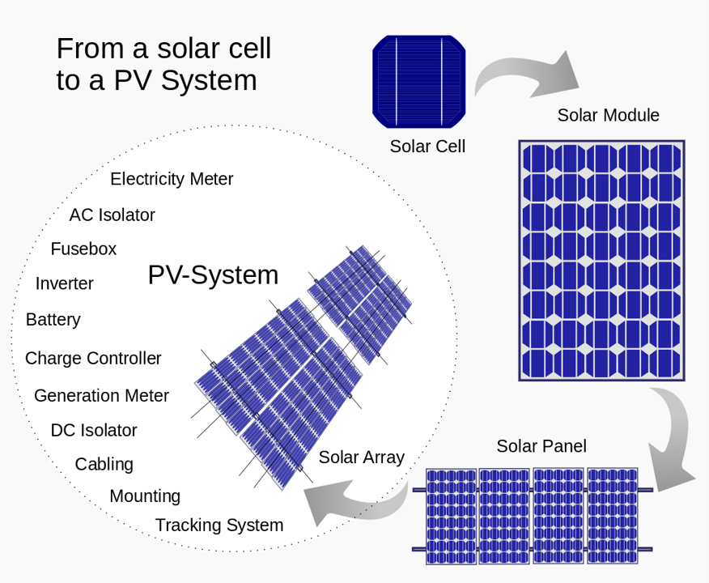{kind=link}
Denominamos como celda fotovoltaica a la unidad fundamental de un panel fotovoltaico. Este elemento es el encargado de la generación de electricidad mediante el efecto fotoeléctrico
Un panel solar esta conformado de un conjunto de celdas fotovoltaicas conectadas en serie y paralelo.
Una central de energía solar fotovoltaica se basa en un conjunto de paneles solares intercontectados
La siguiente imagen muestra los principales componentes de una celda solar.

Dos capas de silicio cargado negativa y positivamente se encargan de producir voltaje a través del efecto fotoeléctrico
La capa antireflectante tiene la función de mejorar la absorción de luz en el semiconductor
Los contactos metálicos en la parte superior e inferior de la celda tienen la función de recolectar la corriente fotogenerada.
La tecnología fotovoltaica es el método más económico de conversión de energía solar a electricidad. En algunos paises, con precios por kWh incluso menores que los combustibles fósiles.
10.2. Fundamentos de la conversión fotovoltaica en semiconductores#
10.2.1. Semiconductores#
Como discutimos en la unidad 3 del curso, un semiconductor es un material caracterizado por un bandgap (\(E_g\)) relativamente pequeño (\(\sim 1 - 2\) eV), de manera tal que un electrón puede ser llevado a la banda de conducción mediante una onda electromagnética o un potencial eléctrico.
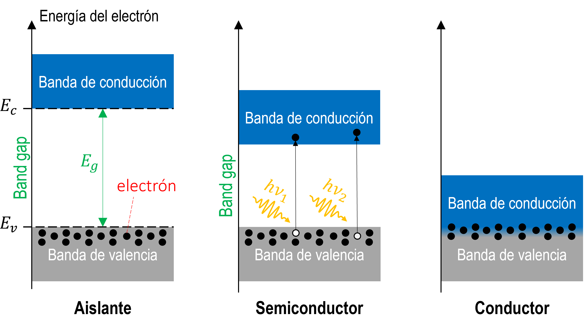{kind=link}
En el silicio, por ejemplo, \(E_g = 1.12\) eV. Así los fotones del espectro visible pueden ser absorbidos por el material.
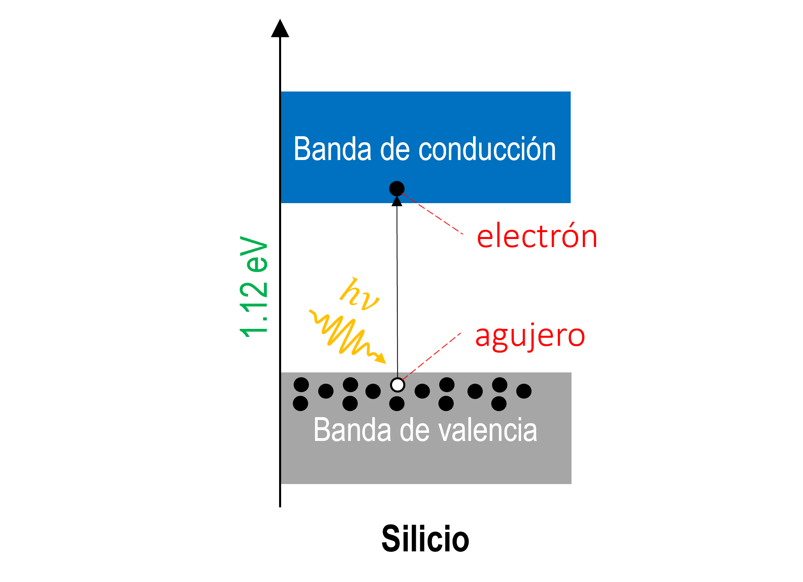{kind=link}
El electrón fotoexitado a la banda de conducción induce una carga neta positiva en la banda de valencia, la cual es deminada agujero o hueco.
Debido al potencial eléctrico inducido entre las bandas de conducción y valencia, el electrón retorna a la posición inicial ocupando el espacio del agujero. Llamamos a este fenómeno recombinación
10.2.2. Dopaje de semiconductores#
El dopaje de semiconductores consiste en introducir impuresas intencionalmente, con el fin de modular las propiedades eléctricas, ópticas o estructurales.
Para entender esto, consideremos el cristal de silicio. Este elemento tiene 4 electrones de valencia.
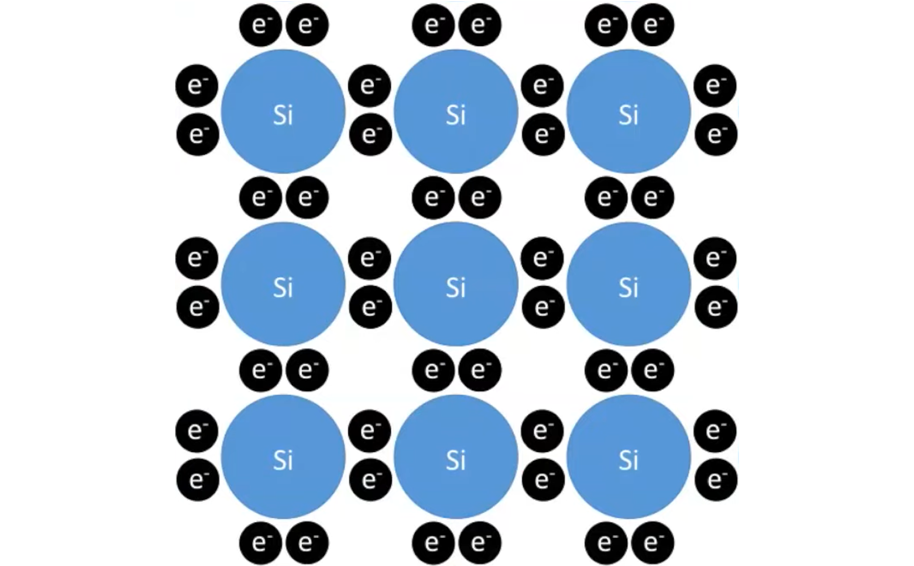{kind=link}
En el esquema, cada átomo de silicio (Si) forma enlaces covalentes con otros 4 átomos y, así, cada orbital en la banda de valencia esta completo.
Debido a esto, los electrones permanecen fuertemente unidos al núcleo. El cristal de silicio, así, no conduce corriente eléctrica.
Consideremos, ahora, la presencia de una impuresa en el cristal.
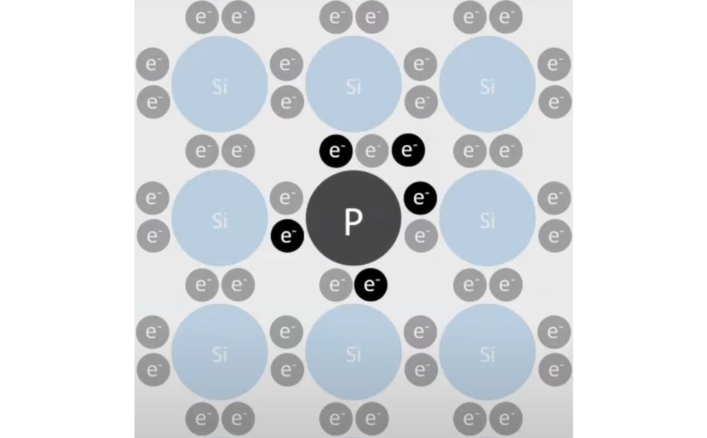{kind=link}
En este caso, consideraremos un átomo de fósforo (P), el cual reemplazará uno de los átomos de silicio.
El fósforo tiene 5 electrones de valencia. Debido que solo 4 electrones son necesarios para completar el orbital de cada átomo de silicio, el cristal quedará con un electrón libre.
Como resultado, el silicio dopado con fósforo quedará con una carga electrica neta negativa.
En este caso, decimos que el semiconductor es de tipo n.
Por el contrario, si el elemento dopante tiene menos electrones de valencia, el semiconductor quedará cargado positivamente
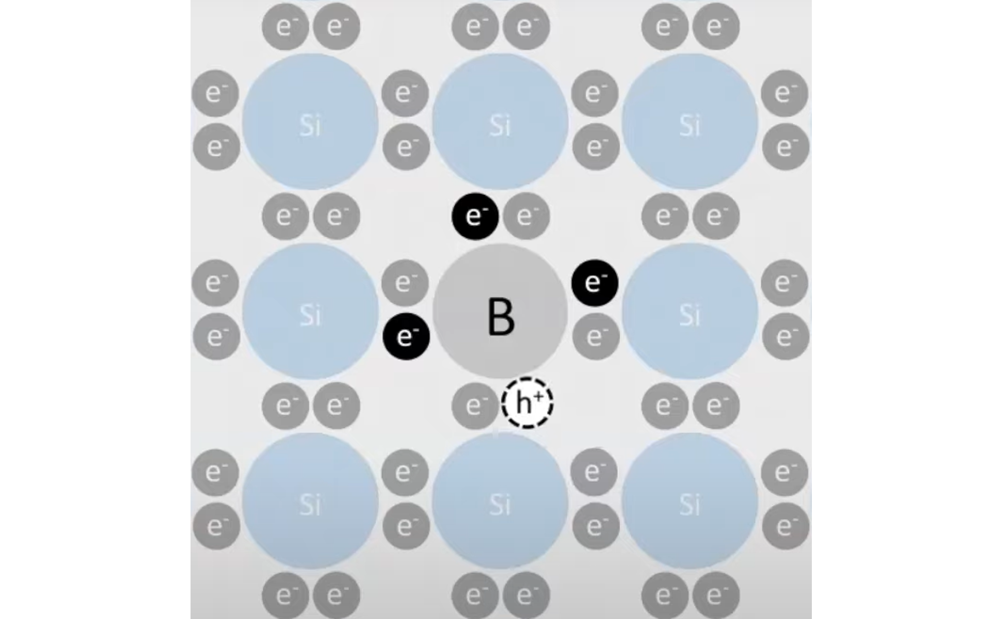{kind=link}
Esto es lo que sucede cuando introducimos un átomo de Boro (B) en el cristal de silicio. El boro tiene 3 electrónes de valencia y, como resultado, el cristal queda cargado positivamente.
En este caso, la aucencia de un electrón es equivalente a tener un agujero que puede moverse libremente por el cristal
En este caso, decimos que el semiconductor es de tipo p.
10.2.3. Unión p-n#
Cuando un semiconductor tipo n se une a un semiconductor tipo p, las cargas negativas y positivas de cada semiconductor se mueven hacia el lado contrario debido a la diferencia de concentraciones en cada semiconductor.
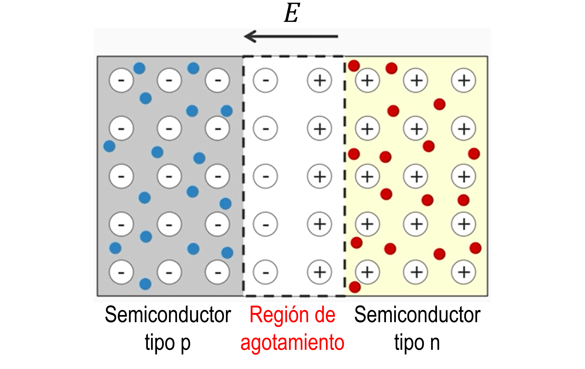{kind=link}
El flujo de cargas eléctricas y la recombinación en cada semiconductor forma una región intermedia denominada región de agotamiento
En equilibrio, la unión pn induce un campo eléctrico opuesto al campo eléctrico neto del sistema, que impide el flujo de cargas eléctricas en cada semiconductor hacia el lado opuesto.
La junta pn es escencial para producir el efecto fotovoltaico.
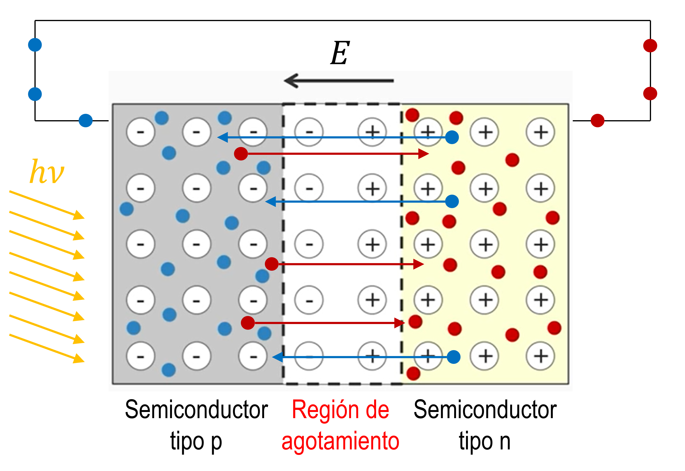{kind=link}
Esto debido a que el campo eléctrico en la junta permite separar el par electron-agujero fotoexcitado.
Notar en el esquema que los llamados portadores minoritarios (agujeros en el semiconductor n y electrones en el semiconductor p), son los encargados de producir una corriente eléctrica
10.2.4. Operación de una celda fotovoltaica#
En ausencia de iluminación la unión pn se comporta como un diodo
Cuando se aplica un voltage opuesto a la dirección del campo eléctrico en la unión pn, nos referimos a un sesgo hacia atrás (reverse bias).
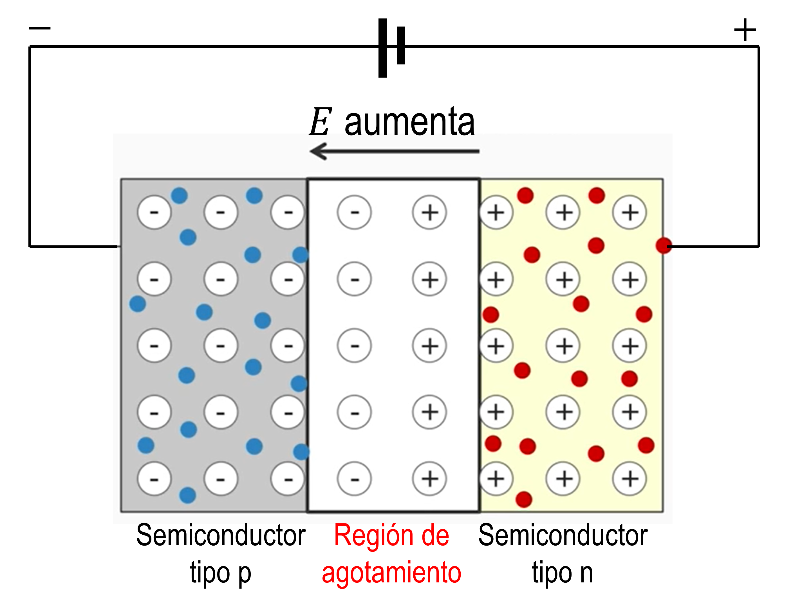{kind=link}
En este caso, la región de agotamiento aumenta su tamaño y la unión pn no conduce corriente
En el caso contrario, ,es decir, cuando se aplica un voltage en la dirección del campo eléctrico en la unión pn, hablamos de un sesgo hacia adelante (forward bias)
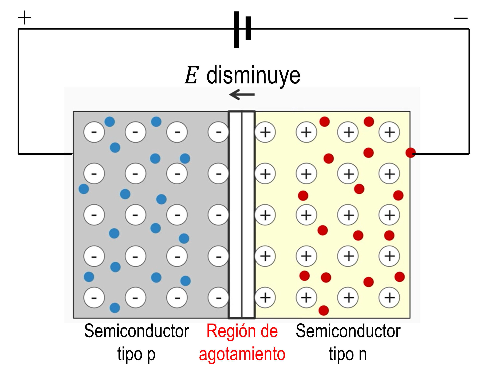{kind=link}
En este caso, la región de agotamiento disminuye su tamaño. Si el voltaje bajo el sesgo hacia adelante es suficientemente grande, la unión pn es capáz de conducir corriente
El siguiente video resume lo discutido en relación al funcionamiento de un diodo y el efecto de la unión pn.
Usando una curva J-V (Densidad de corriente vs Voltaje), el comportamiento es:
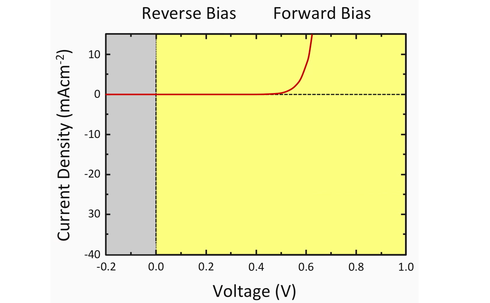{kind=link}
Matemáticamente:
donde \(e\) es la carga elemental del electrón (\(1.602\times10^{-19}~\mathrm{J/V}\)), \(k_B\) es la constante de Boltzmann, \(T\) es la temperatura del diodo, y \(J_0\) es la densidad de corriente de saturación. El valor de \(J_0\) es pequeño y depende de la temperatura de la celda.
Cuando la unión pn es iluminada, la corriente fotoinducida desplaza la curva J-V del diodo.
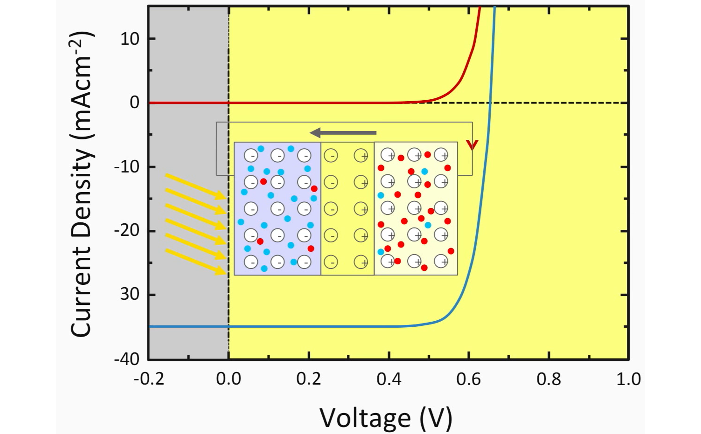{kind=link}
Matemáticamente:
donde \(J_\mathrm{pv}\) es la densidad corriente fotoinducida.
10.2.5. Caracterización de una celda fotoltaica#
Debido a que la curva J-V anterior estaba basada en un diodo, la corriente es considerada positiva en la dirección del sesgo hacia adelante. En el caso de una celda fotovoltaica, el objetivo es generar corriente en el sentido contrario. Así, la curva J-V se grafica en sentido inverso:
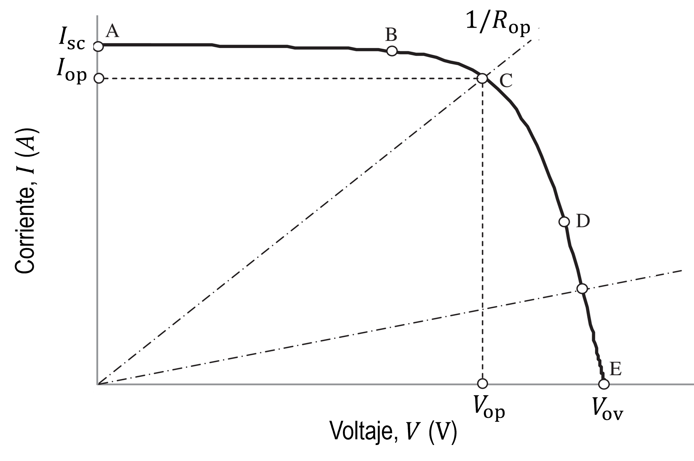{kind=link}
La corriente de corto circuito \(J_\mathrm{sc}\) representa la máxima densidad de corriente que puede entregar la celda sin carga eléctrica (\(V_\mathrm{sc} = 0\))
El voltaje en circuito abierto \(V_\mathrm{oc}\) representa el máximo voltage que puede entregar la celda (\(J_\mathrm{oc} = 0\))
Si los términales de la celda son conectados a una resistencia \(R\), el punto de operación está dado por la intersección de la curva J-V y la curva \(J = V/R\).
La densidad de potencia de la celda, \(P\), está dada por \(P= JV\)
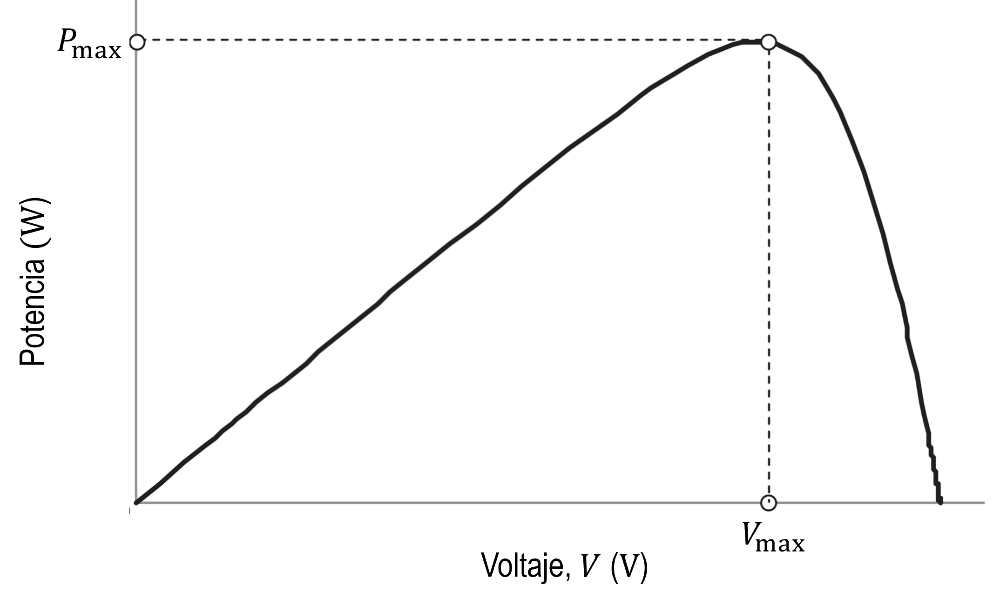{kind=link}
Como podemos ver en la curva, entre los valores de \(V_\mathrm{oc}\) y \(J_\mathrm{sc}\) la potencia entregada por la celda aumenta hasta un valor máximo.
Este punto representa la condición donde el desempeño de la celda es óptimo.
A partir de esto, definimos el factor de llena (fill factor), \(\mathrm{FF}\) como:
Este es un parámetro de diseño de la celda. A través de este parámetro podemos determinar la densidad de potencia máxima del sistema como \(P_\mathrm{max} = \mathrm{FF}J_\mathrm{sc}V_\mathrm{oc}\)
Otro parámetro de interés es la máxima eficiencia de la celda, definida por:
En la práctica, estas curvas se obtienen mediante un ensayo de cada panel en condiciones estándar. Esto es, radiación según AM1.5 y temperatura 25°C.
Cabe destacar que la discución anterior está basada en parámetros por unidad de área. Generalmente, la información del fabricante está dada en valores de corriente total, \(I = AJ\), donde \(A\) es la superficie expuesta del panel.
De forma similar, los valores de \(P_\mathrm{max}\) se entregan en valores de watts. En este caso, es común utilizar la unidad \(\mathrm{Wp}\) o watt peak, que representa la potencia en el punto de operación óptimo del panel
La siguiente tabla, muestra información de catálogo de un panel fotovoltaico del fabricante Sunceco.
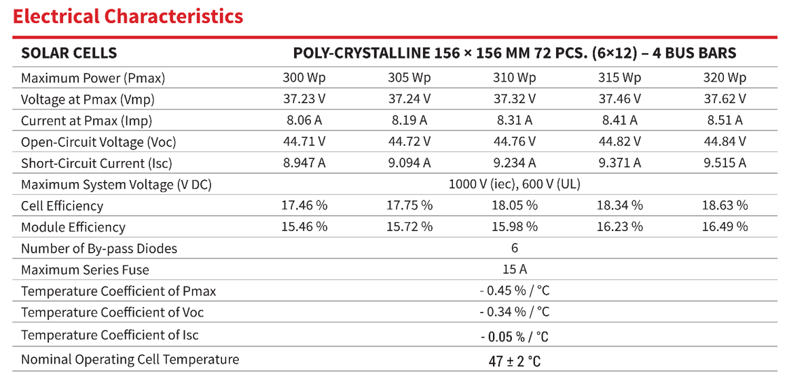{kind=link}
En este caso el fabricante también entrega las curvas IV para distintos niveles de irradiancia y temperatura.
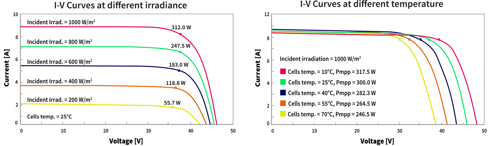{kind=link}
Notar que:
La corriente de corto circuito \(I_\mathrm{sc}\) aumenta con la irradiancia y, por concecuencia, la potencia entregada por el panel es mayor.
Un aumento de temperatura, en cambio, disminuye \(V_\mathrm{oc}\) y, por lo tanto, la potencia entregada por el panel es menor.
10.2.6. Máxima eficiencia en celdas fotovoltaicas#
Debido a que la conversión de energía fotovoltaica está basada en el efecto fotoeléctrico, la eficiencia termodinámica de una celda está condicionada por el bandgap del semiconductor utilizado.
Por ejemplo, en el caso del silicio (\(E_\mathrm{g} = 1.12~\mathrm{eV}\)), solo una porción del espectro solar es efectivamente convertido a electricidad.
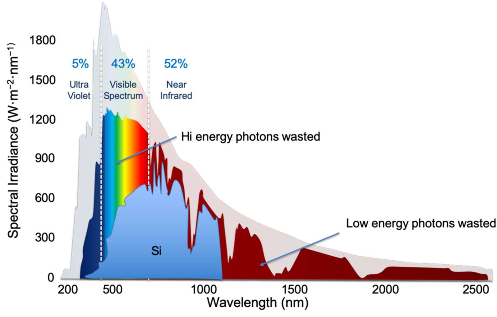{kind=link}
En teoría, además de las pérdidas asociadas al bandgap del semiconductor, existen otros factores que inevitablemente afectan la eficienca de conversión de energía, tales como el calor emitido por la celda y la recombinación.
El límite de Shockley–Queisser, define la máxima eficiencia teórica de una celda fotovoltaica, considerando estos factores:
33.2% para una celda de unión pn simple (un semiconductor) con un bandgap de 1.34 eV. El valor desciende a 32% en el caso del silicio.
42% para celdas de doble unión, y 49% para celdas de triple unión
65% para celdas de 5 uniones con concentración de radiación
10.2.7. Pérdidas de energía en una celda fotovoltaica#
Además de las pérdidas estimadas mediante la eficiencia temrmodinámica, una celda presenta pérdidas de energía eléctrica debido a aspectos asociados a la fabricación. Podemos representar las pérdidas en una celda mediante dos resistencias:
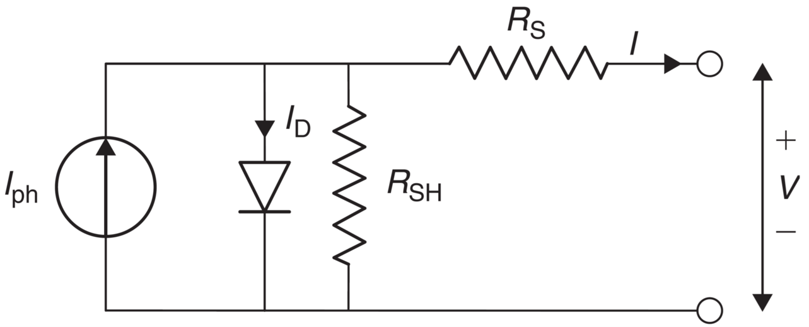{kind=link}
Resistencia en serie (\(R_\mathrm{s}\)), representando lás pérdidas por resistencia en el semiconductor en la interface de los contactos eléctricos, y en los contactos.
Resistencia shunt (\(R_\mathrm{sh}\)), representando lás pérdidas por derivación de corriente a lo largo de grietas en el material, o en los bordes de la celda.
Ambas series afectan el desempeño de la celda, disminuyendo la potencia máxima.
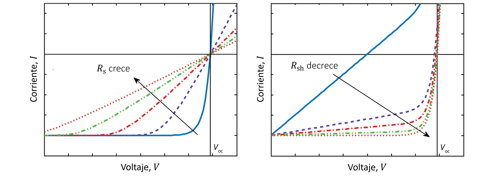{kind=link}
En la práctica \(R_\mathrm{s}\) debe ser lo más baja posible, y \(R_\mathrm{sh}\) debe ser lo más alta posible.
10.2.8. Fabricación de celdas fotovoltaicas#
Los métodos de fabricación de las celdas dependen del tipo de material y la cristalinidad deseada.
El video a continuación muestra el procedimiento de fabricación de celdas de silicio cristalino, el material más utilizado en paneles.
10.3. Paneles fotovoltaicos#
10.3.1. Ensamblaje de celdas fotovoltaicas#
En la práctica, las celdas fotovoltaicas se agrupan en un módulo mediante conexiones en serie y paralelo con el fin de aumentar la corriente y voltaje total.

En el siguiente esquema se muestra un módulo con un arreglo de \(N_\mathrm{SM}\) celdas en serie y \(N_\mathrm{PM}\) en paralelo.
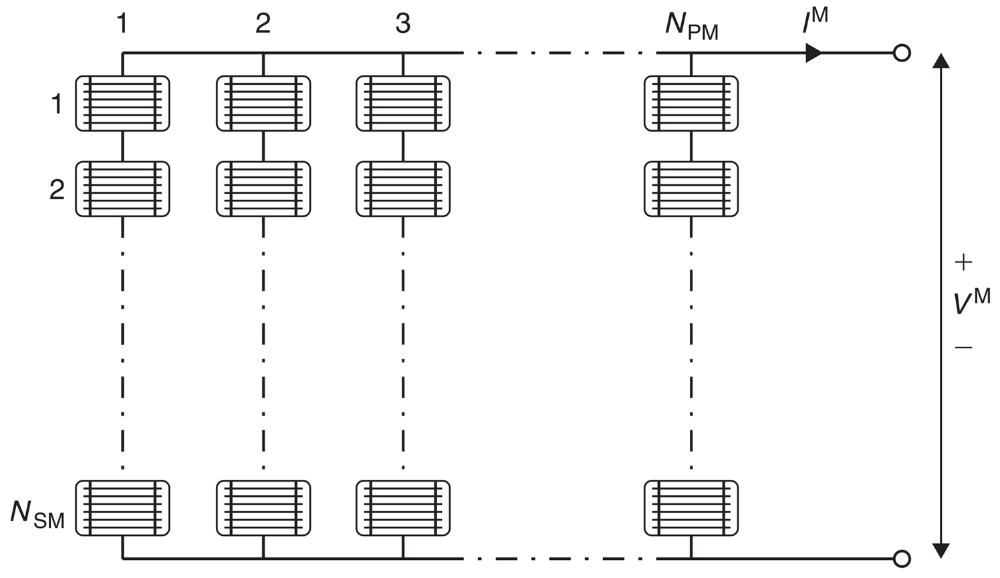{kind=link}
La corriente de cortocircuito del módulo, \(I_\mathrm{sc}^\mathrm{M}\), esta asociada con \(I_\mathrm{sc}\) mediante:
El voltage de circuito abierto del módulo, \(V_\mathrm{oc}^\mathrm{M}\), esta asociada con \(V_\mathrm{oc}\) mediante:
10.3.2. Componentes de un módulo fotovoltaico#
El módulo, además esta cubierto por una serie de capas que buscan proteger las celdas contra los efectos del medioambiente
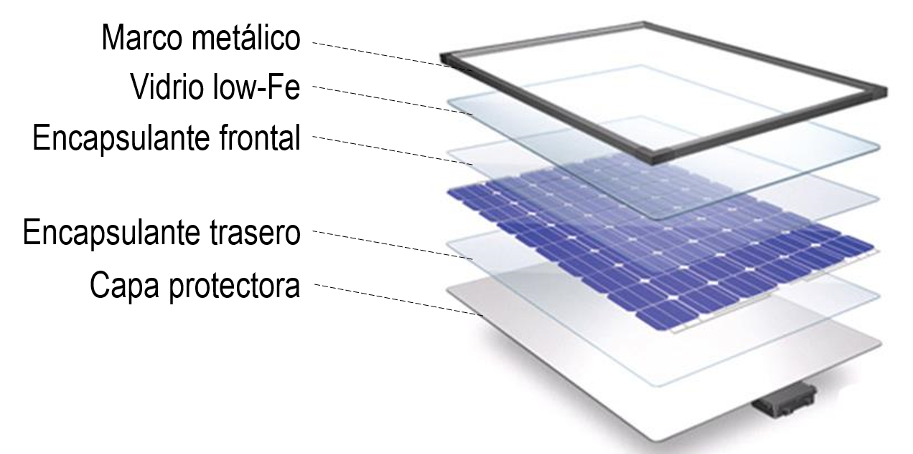{kind=link}
El encapsulante tiene como fin adherir las celdas con la superficie superior e inferior del módulo. Comúnmente se utiliza EVA (acertato de etilo vinilo)
Un vidrio con bajo nivel de hierro (low-Fe glass) se ubica en la parte superior para proteger el módulo.
Una capa protectora en la parte trasera, comúnmente PVF (Tedlar), proteje las celdas contra la humedad y polvo.
Por último, vários módulos solares generalmente se conectan en arreglos en paralelo y serie para aumentar aún más la potencia del sistema fotovoltaico
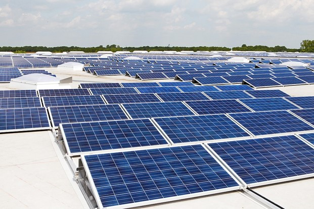{kind=link}
10.4. Principales tecnologías fotovoltaicas#
10.4.1. Silicio monocristalino (mono-Si)#

La eficiencia de los módulos puede ser entre 18 - 20%.
Son relativamente costosas en comparación con otras celdas solares.
Son la tecnología dominante en el mercado
La eficiencia decae rápidamente con la temperatura, entre 0.4 - 0.5%/°C
10.4.2. Silicio policristalino (poly-Si)#
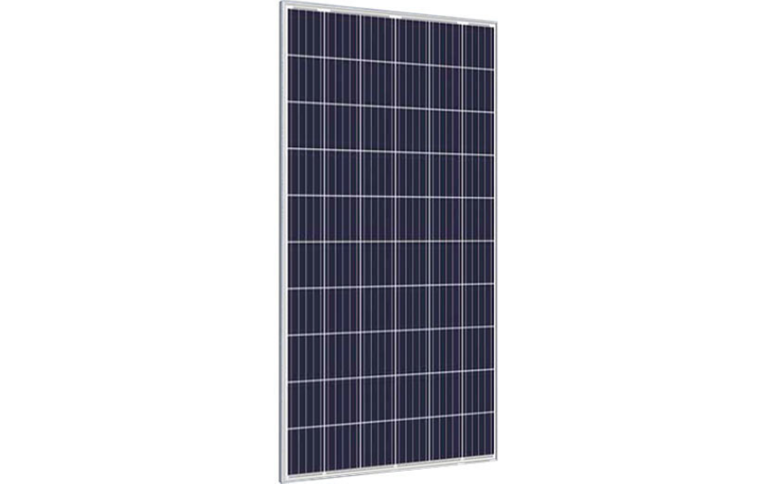{kind=link}
La eficiencia de los módulos puede ser entre 15 - 18%
Son más económicas que las mono-Si.
La eficiencia decae rápidamente con la temperatura, entre 0.4 - 0.5%/°C
10.4.3. Silicio amorfo (a-Si) - Película delgada#
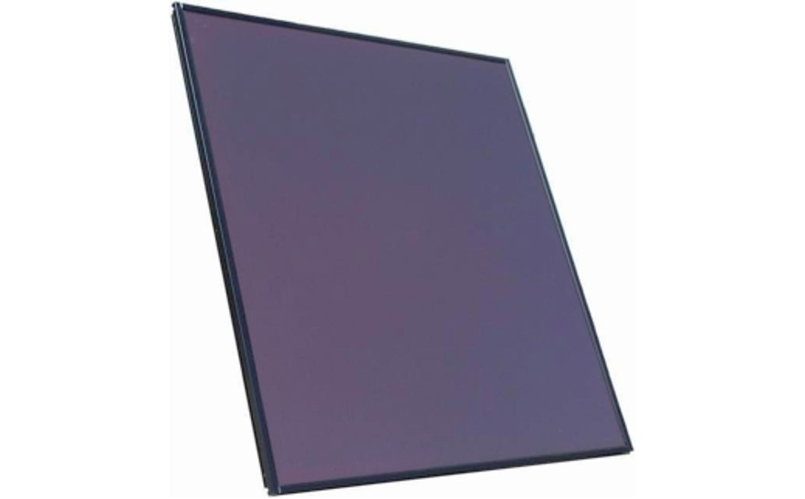{kind=link}
El silicio amorfo absorbe la luz mejor que el silicio cristalino o policristalino
Debido a esto, permiten menor uso de material dando origen a las celdas de capa delgada (thin film).
Su producción es mucho más económica que las poly- o mono- Si.
Su eficiencia puede estar entre 6 - 7%
Son menos populares respecto a otras celdas de capa delgada debido a su baja eficiencia.
Son más tolerantes al calor, con un coeficiente de pérdida de eficiencia de -0.2 %/°C
10.4.4. Telurio Cadmio (CdTe) - Película delgada#
{kind=link}
También se fabrican en formato Thin film
La eficiencia puede ir entre 15 - 19%
El principal fabricante es First Solar.
Son relativamente tolerantes al calor, con coeficientes de pérdida de eficiencia de 0.25 - 0.35 %/°C.
Son más costosas que las poly-Si, pero de menor costo que las mono-Si
Existe preocupación por la manufactura y disposición de estos paneles debido a la toxicidad del Cd.
10.4.5. CIGS (Cu-I-Ga-Se) - Película delgada#
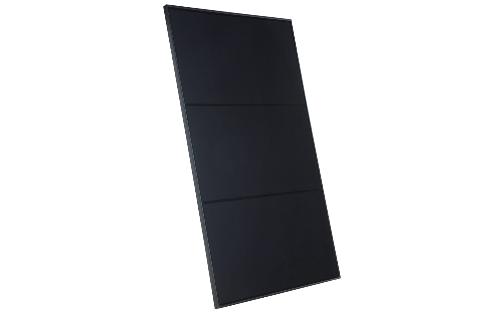{kind=link}
Una de las tecnologías de película delgada más nuevas.
Puede alcanzar eficiencias entre 10 - 20%
Los coeficientes de pérdida de eficiencia son 0.3 - 0.4 %/°C
10.5. Situación de la tecnología fotovoltaica#
La siguiente figura muestra la produción de paneles fotovoltaicos por año (fuente: Fraunhofer Institute for Solar Energy Systems)
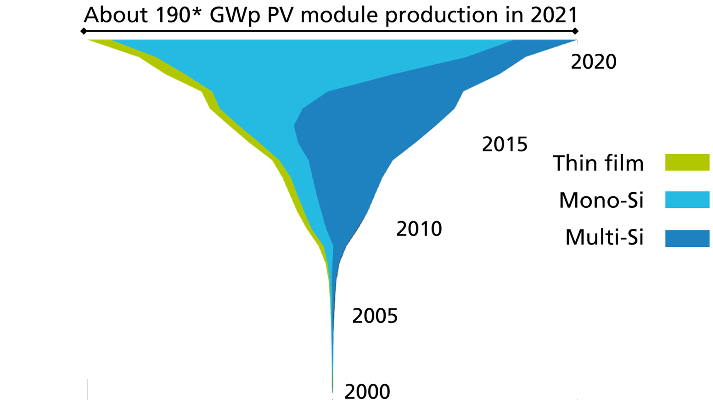{kind=link}
Hasta hace algunos años el mercado de paneles fotoltaicos era dominado por los de tipo poly-Si. Sin embargo, la mejora en los procesos productivos por parte de la industria China, han catapultado la producción de paneles Mono-Si. Actualmente, esta teconología domina el mercado.
Respecto a la eficiencia de las celdas a escala de laboratorio, las celdas mono-Si han mejorado gradualmente en los últimos 20 años, mientras que las de capa delgada han mostrado mejoras considerables en su eficiencia. Otras nuevas tecnologías como celdas multi-unión o de Peroskitas, han mostrado eficiencias superiores. Sin embargo, estas tecnologías aún se encuentran en desarrollo.
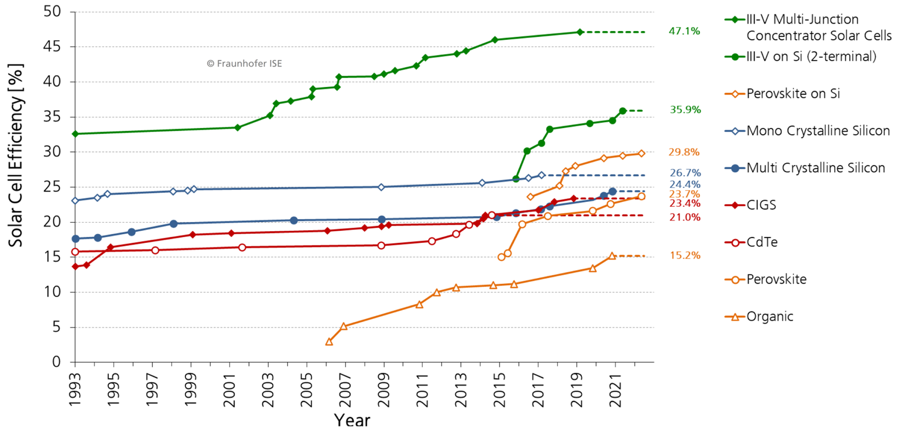{kind=link}
10.6. Nuevas tecnologías de conversión fotovoltaica#
10.6.1. Superficies multifuncionales#
Una de las alternativas para mejorar la eficiencia de las celdas solares es mediante la nanoestructuración de la superficie del semiconductor. El efecto principal de esta técnica es reducir el contraste del índice de refracción entre el silicio y el aire. La nanoestructuración de la superficie del silicio induce un índice de refracción efectivo que cambia gradualmente entre el aire y el material, reduciendo así las pérdidas por reflección.
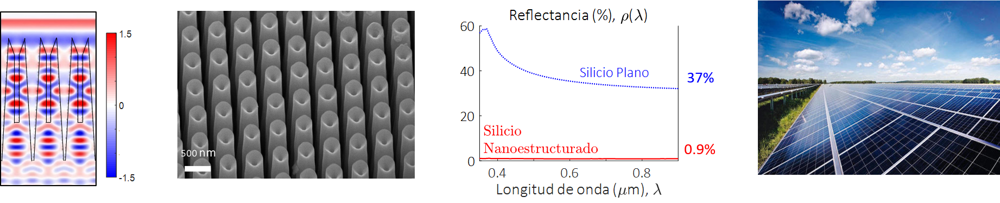{kind=link}
Como consecuencia de la nanostructuración, la superficie adquiere propiedades superhidrofóbicas. Esto permite que el panel adquiera propiedades autolimpiantes, similar a lo que ocurre en algunas plantas como las hojas de la flor de loto.
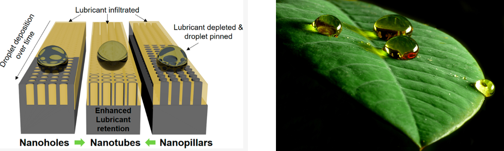{kind=link}
10.6.2. Conversión termofotovoltaica (TPV)#
La tecnología de conversión termofotovoltaica consiste en cambiar el sol, como fuente de radiación, por un emisor térmico cercano a la celda. Esto permite una mejor aprovechamiento de la radiación, ya que parte de los fotones que no son convertidos a corriente, pueden ser reflejados de vuelta al emisor.
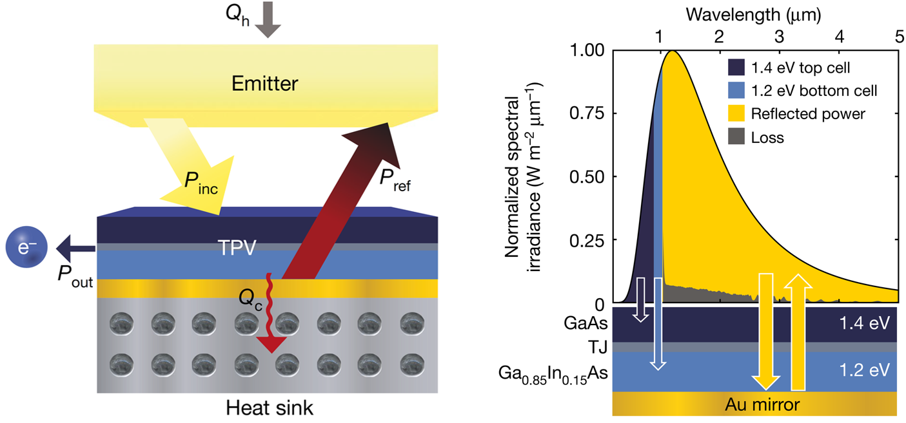{kind=link}
El límite teórico definido por Shockley–Queisser es de 85%. En la práctica, las celdas TPV han alcanzado eficiencias de hasta 40%.
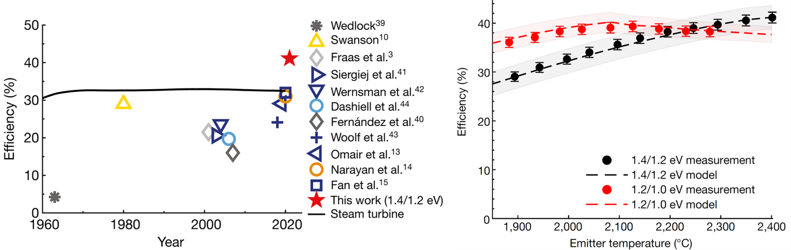{kind=link}
Esta tecnología, aún en desarrollo, se ha propuesto para conversión de energía solar, o como técnica para recuperación del calor desechado en procesos térmicos. En el caso de conversión TPV solas, las eficiencias aún están por debajo del 10%.
La siguiente imagen muestra un estudio donde se propone TPV para conversión de energía solar. El ensayo fue realizado en un laboratorio con un simulador solar.
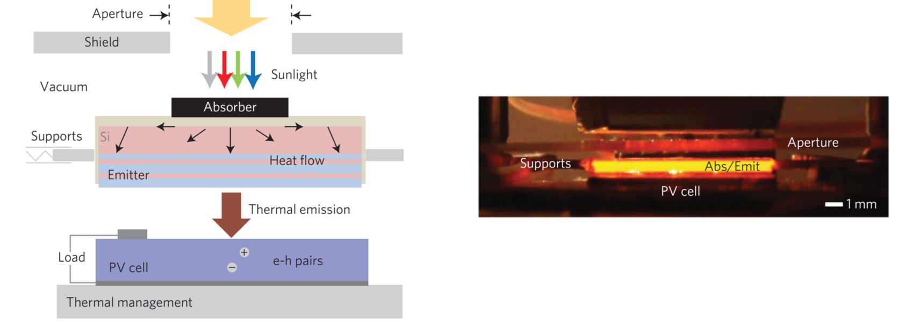{kind=link}
En la siguiente imagen se muestra un tpv para un sistema de almacenaje térmico de energía eléctrica (TEGS por sus siglas en ingles).
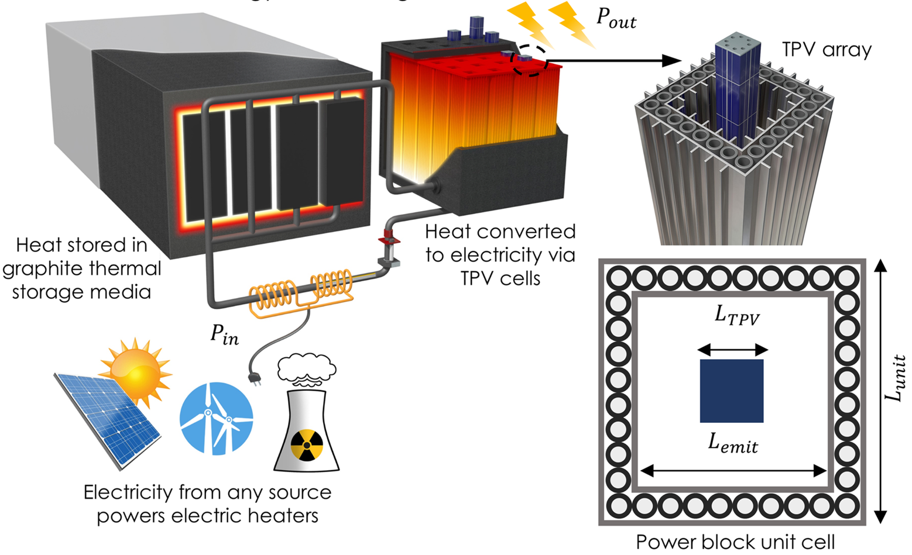{kind=link}
El sistema almacena la energía eléctrica en forma de energía térmica, y luego la vuelve a convertir a energía eléctrica mediante celdas TPV. Según el estudio, el sistema permite almacenar energía eléctrica por periodos prolongados y a un costo menor que las baterías convecionales.
Otra alternativa en estudio es utilizar radiación de campo cercano para conversión tpv. Este concepto se basa en la conversión de radiación no propagada, lo cual se consigue cuando la separación entre el emisor y el receptor es menor a la longitud de onda definida por la ley de Wien.
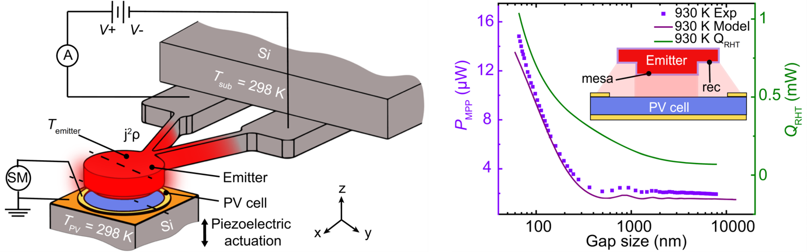{kind=link}
A pesar de que está técnica podría alcanzar mayores eficiencias que las tpv comúnes, las eficiencias experimentales son menores a 10%.
10.6.3. Concentradores solares luminiscentes#
Otra tecnología aún en desarrollo son los concentradores solares luminiscentes. Este concepto consiste en la concentración solar usando materiales con luminiscencia. La radiación solar es absorbida y reemitida por pigmentos luminiscentes, canalizada hasta los bordes y luego convertida a elecricidad mediante celdas fotovoltaicas.
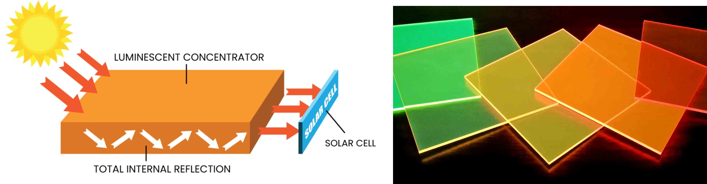{kind=link}
Esta tecnología no pretende competir con las tecnologías de conversión solar convencionales, sino que ofrecer una alternativa de conversión de energía solar en ventanas para edificios.
10.7. Referencias#
Kalogirou S. A. Chapter 9. Photovoltaic Systems in Solar Energy Engineering Processes and Systems, 2nd Ed, Academic Press, 2014